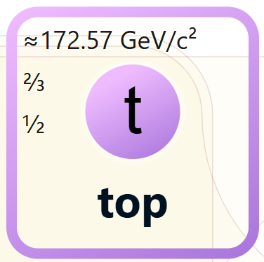

< Back
The top quark is one of the six types of quarks in the Standard Model of particle physics. Discovered at Fermilab in 1995, it's also the heaviest known elementary particle. It's interestingly related to the Higgs boson.

The top quark plays an important role in the stability of our universe, as well as our understanding of the strong force.